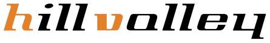
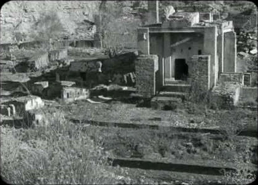

Productora madrileña especializada en humor y contenidos creativos, responsable de programas como Muchachada Nui. Con ellos desarrollé sobre todo proyectos audiovisuales para clientes corporativos.

Jefe de producción en varios cortometrajes de cine independiente. El más destacado, Avant Pétalos Grillados, recorrió más de 20 festivales de todo el mundo y fue premiado internacionalmente.

En el departamento de producción de Telson, trabajando en varios programas de teletienda para televisión.
Responsable de las licitaciones del grupo: localizar los concursos públicos audiovisuales y preparar cada candidatura de principio a fin.